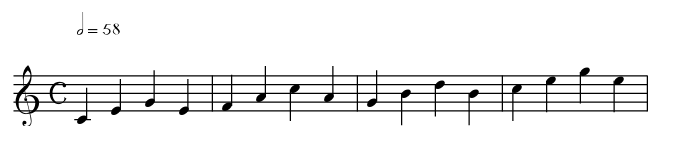

name: inverse layout: true class: center, middle, inverse --- #Functional Modelling of Musical Harmony An Introduction to HarmTrace .footnote[[Original Paper](http://dreixel.net/research/pdf/fmmh.pdf)] --- layout: false # Introduction to HarmTrace - Harmony Analysis and Retrieval of Music with Type-level Representations of Abstract Chords Entities - Encode musical structure at the type level - Implemented in Haskell - Limited to western jazz and pop music --- # Harmony Basics - Tone - Note - Semitone - Chord - Root - Dominant - Subdominant ## Demo http://www.multiplayerpiano.com/cs4215 --- # Example Chord Progression <a href="https://my.scorecloud.com/song/fcf52cd6c3895696a5e3e29cb77570fd">  </a> - I:Maj, IV:Maj, V:Maj, I:Maj --- # Top Level Types - A piece has a list of phrases - A phrase is either tonic or dominant - Tonic is a chord of I:Maj degree - Dominant has a main chord of degree V:Maj - Preceeded by any number of subdominant - Subdominant is a chord of IV:Maj degree --- # Degree Type - 1st Attempt - Naiive approach - allow degree to be encoded in any level and class - Example - V:Maj = Degree 5 Maj - IV:Min = Degree 4 Min - VI:Dom7 = Degree 6 Dom7 --- # Problem - Allow Bad Chords <a href="https://my.scorecloud.com/song/73e26f2dc89986becc21ff97e39f286d"> </a> - I:Maj, III:Maj, V:Maj, I:Maj - III:Maj is neither tonic, dominant, nor subdominant --- # Degree Type - 2nd Attempt - Haskell Phantom Type --- # Degree/Deg Conversion - Make use of Haskell Type Classes - ToRoot - convert roman numeral data type into integer - ToClass - identity type? - Key techique - hide the constructor for bad degrees - Example - `instance ToRoot II` is hidden - Not possible to construct piece containing II:Maj --- # Secondary Dominant - Use Haskell GADT to encode degree at type level - GADT = Generalised Algebraic Data Types - Degree can either be a base degree or a ConsV - Base degree - just the dominant itself - ConsV - The subdominant chord V/δ where δ is the δth scale degree - Basically calculation of the subdominant chord, but how? --- # Type Family V/ - HarmTrace approach: brute force table using Haskell's type family - Actual musical approach: - Get the note that is fifth from the root of current degree - Use that note as root and form a dominant 7th degree. - Example: Subdominant of V:Dom7 is II:Dom7 - V + 5 = II - V, VI, VII, I, II - Possible to calculate in Haskell at type level? --- # Example Tree --- # Example Command ## Input ``` C:maj C:maj;1 F:maj;1 D:7;1 G:7;1 C:maj;1 ``` ## Command ```bash $ harmtrace parse -i sample.txt -g jazz ``` ## Input Syntax and Manual http://www.cs.uu.nl/wiki/GenericProgramming/HarmTrace#Input_file_syntax --- # HarmTrace Result ``` [Piece [PT [T_1_1[I_1[ C:maj ]]]] [PD [D_1_1 [S_3_1[IV_1[ F:maj ]]] [D_2_1 [V/V_1 [II7_1[ D:7 ]]] [V7_1[ G:7 ]]]]] [PT [T_1_1 [I_1[ C:maj ]]]]] ``` --- # Parser - Parser implemented using Haskell applicative functor - `<|>`, `<$>`, `<*>` - Use `uu-parsinglib` library to build parser - Use `instant-generics` library to reduce boilerplates - Constructor order prioritize ambigious rules - No left-recursive datatypes in HarmTrace --- # Adhoc Parser - Parsing is trivial for cases like `Ton` and `Dom` - Only non-generic part of parser is Degree_Final - Use of `ToDegree` and `ToClass` - Parsing type-level natural number is "undecidable" for GHC - Solution: introduce base case instance - --- # Chord Similarity - Expressing music at type level enable use of generic tools - Parser - Pretty Printer - Diff tools - Generic `diff` for comparing harmonic similarity - Based on four primitive generic functions - `children` - list of all children of term - `build` - build term from children - `eqCon` - compare equality of terms at constructor - `typeOf` - get type of a term --- # Thank you! Slide available at http://github.com/soareschen/harmtrace-slides Slideshow created using [remark](http://github.com/gnab/remark).